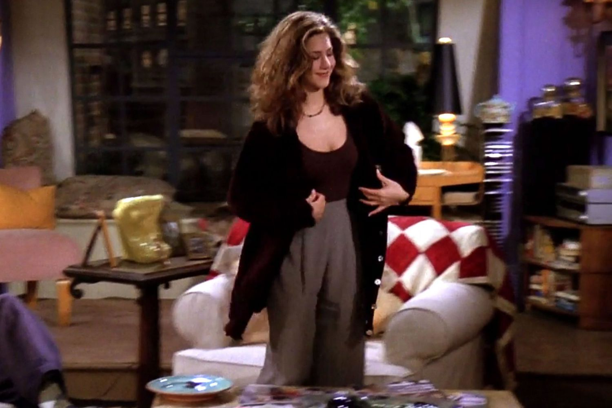

Rachel Green
Rachel starts the series as a spoiled rich girl who becomes independent by working as a waitress at Central Perk. Over the course of the series, she grows into an assertive businesswoman in the fashion industry. She is notable for her complex love storyline with Ross Geller.
Check out some Fun Facts about Rachel!
👇

Rachel Green is known for her impeccable fashion sense. Her iconic hairstyles and trendy outfits throughout the series have made her a style icon.